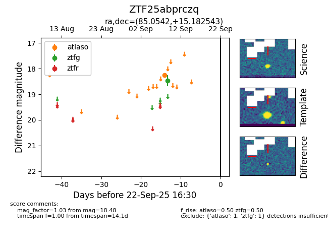

FINK: ZTF25abprczq
Lasair: ZTF25abprczq
ALeRCE: ZTF25abprczq
ZTF25abprczq (ztf,fink)
equatorial (ra, dec) = (85.0542,+15.18254)
galactic (l, b) = (191.1251,-8.23449)

last atlaso=18.26, ztfg=18.48
1 atlaso, 1 ztfg detections